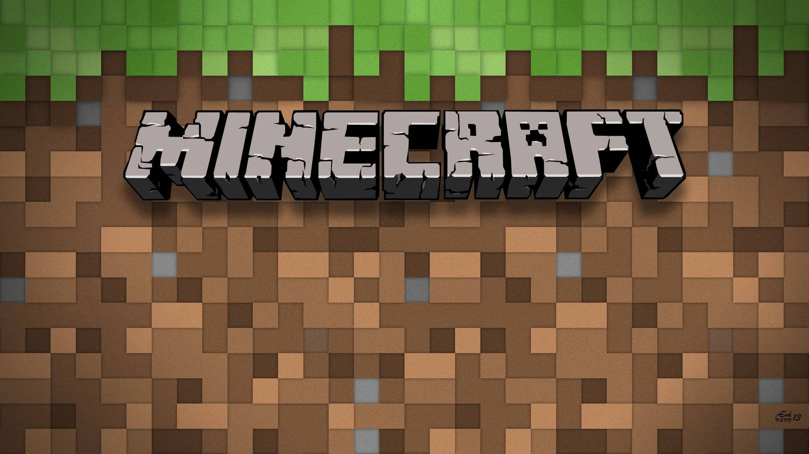
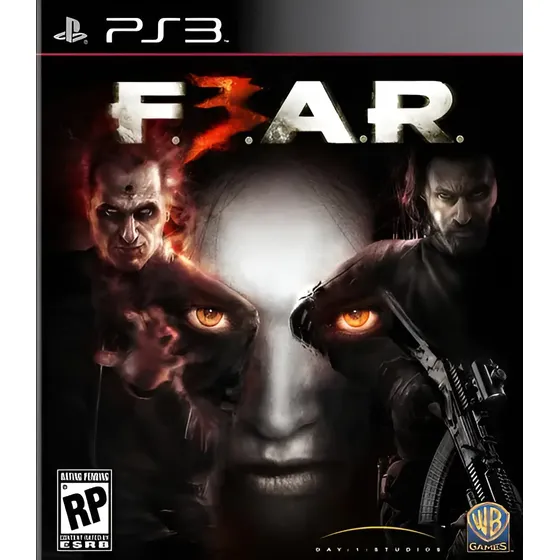

Exemplos de Jogos que usam IA
Vários games ao longo da história se destacaram pelo uso inovador de Inteligência Artificial. Confira os exemplos mais marcantes:
Games com IA avançada
Minecraft

Usa geração procedural para criar mundos infinitos e únicos a cada partida. Nenhum mapa é igual ao outro.
The Sims
Cada personagem possui necessidades, humor e desejos simulados por IA. Eles tomam decisões autônomas baseadas em seu estado interno.
F.E.A.R.

Considerado um dos jogos com a IA de inimigos mais avançada da história. Os soldados usavam cobertura, flanqueavam e coordenavam ataques.
Alien: Isolation
O xenomorfo é controlado por uma IA que aprende os padrões do jogador e adapta seu comportamento para ser cada vez mais ameaçador.
Middle-Earth: Shadow of Mordor
O sistema Nemesis cria inimigos com memória — eles lembram de confrontos anteriores com o jogador e evoluem com base nessas interações.
Gran Turismo (GT Sophy)
A atualização de 2023 introduziu o GT Sophy, um agente de corrida com comportamento mais humano, capaz de disputar corridas de forma natural e desafiadora.
Games famosos sem IA avançada
Nem todo jogo famoso depende de IA complexa. Muitos títulos se tornaram ícones usando mecânicas simples e criatividade:
| Games clássicos com IA simples | ||
|---|---|---|
| Jogo | Como funciona | Por que é famoso |
| Tetris (1984) | Peças caem aleatoriamente, sem IA real | Design simples e viciante |
| Super Mario Bros. (1985) | Inimigos seguem padrões fixos | Level design e jogabilidade perfeitos |
| Doom (1993) | Inimigos perseguem o jogador por ângulo | Pioneiro do FPS moderno |
| Pokémon (1996) | Oponentes seguem regras de tipo e dano | Sistema de batalha estratégico |
| Fonte: IA Games — Enzo 5165527 | ||
Games brasileiros em destaque
O Brasil também tem uma cena de desenvolvimento de games crescente. Veja alguns títulos nacionais reconhecidos:
- Horizon Chase Turbo — jogo de corrida inspirado nos clássicos dos anos 90, desenvolvido pela Aquiris Game Studio (Porto Alegre)
- Dandara — plataforma de ação com mecânicas inovadoras de gravidade, desenvolvido pela Long Hat House (Belo Horizonte)
- Knights of Pen and Paper — RPG com humor e referências à cultura geek, desenvolvido pela Behold Studios (Curitiba)
- Chroma Squad — jogo de estratégia inspirado nos Super Sentai/Power Rangers, também da Behold Studios
Esses jogos mostram que o Brasil tem talento para criar experiências únicas, mesmo sem os grandes orçamentos das produtoras internacionais.
Comparativo geral
| Jogo | Tipo de IA | Destaque |
|---|---|---|
| Minecraft | Geração procedural | Mundos infinitos |
| The Sims | IA autônoma | Personagens com vida própria |
| F.E.A.R. | IA tática | Inimigos com estratégia |
| Alien: Isolation | IA adaptativa | Aprende com o jogador |
| Shadow of Mordor | Sistema Nemesis | Inimigos com memória |